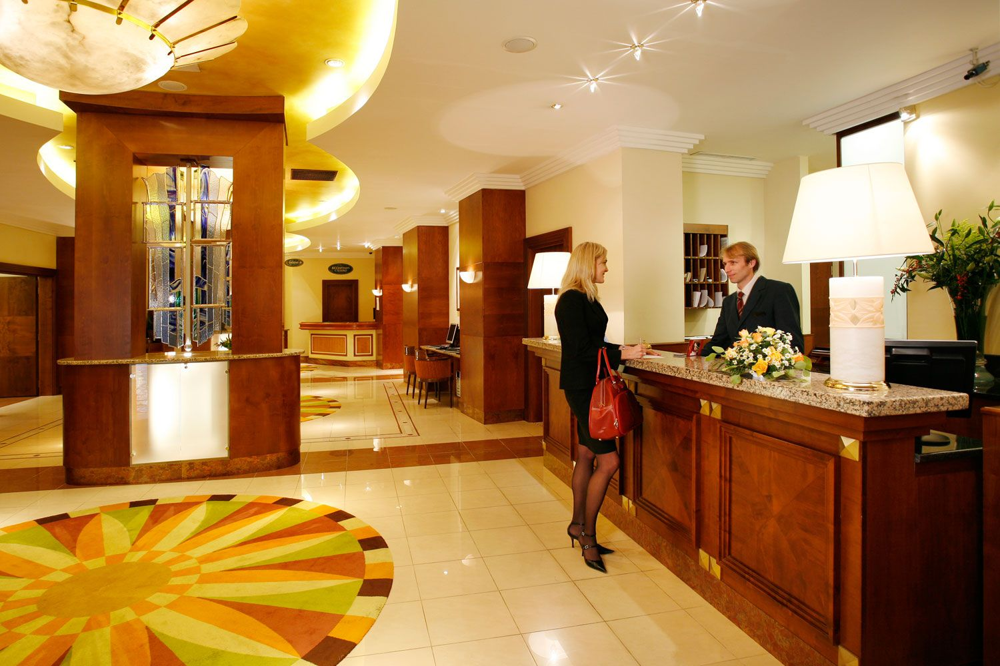

ABOUT SAROVER HOTEL

Sarovar Portico - Ahmedabad,Gujarat, India
Hotel Overview :
Get a cordial reception at Sarovar Portico as you are introduced to this property that promises you every possible comfort and a world-class luxury. The entrance lobby itself is inviting with its wooden feel and plush furnishings. All the rooms and suites come with all of the best luxuries and a dedicated staff ensures that you are attended to anytime during the day. Extra care is taken to provide you things to pamper you and keep your refreshed throughout the day. The hotel ensures that its guests are always comfortable and well-connected. Business tourists are even provided with the best of business facilities. The hotel even has the capacity to organize business conferences and meetings in its well-equipped conference halls. Dining is a priority for Sarovar. It has an amazing multi-cuisine restaurant that allows guests to enjoy on delicious meals as they enjoy a lovely view of the gardens and the Sabarmati River.
Ahmedabad Local Information :
Fondly called the Manchester of India, Ahmedabad is a budding commercial town that is known to be the largest textile center in the country. Having a good history, it is dotted with a number of monuments. Intricately carved mansions and havelis are also a regular feature in Ahmedabad. There are many places worth visiting in Ahmedabad. Gandhi Ashram on the banks of Sabarmati is historically important as it was the place from where the Mahatma started his Dandi March. An important religious site here is the Akshardham temple. Built in the memory of Lord Swaminarayana, it houses a 7 feet gold plated idol of the deity. The Indian Institute of Management (IIM) is also a place worth visiting in Ahmedabad. It is a marvel in architecture. Jumma Masjid and Siddi Saiyad Mosque are the most famous mosques in the city.
Connectivity
By Air
Hotel is 8 Kilometers from airport. Ahmedabad airport has both national and international flights. Air India has direct flights to UK and USA. Indian Airlines has daily flights to Mumbai and Delhi. It also has flights for Bangalore, Goa and Chennai.
By Rail
Hotel is 3 Kilometers from Railway Station. Ahmedabad is connected by Rail from all major cities of India. From Mumbai there is a daily Shatabdi Express operating.
By Road
Ahmedabad has a good road network and is well connected with Udaipur, Rajasthan.